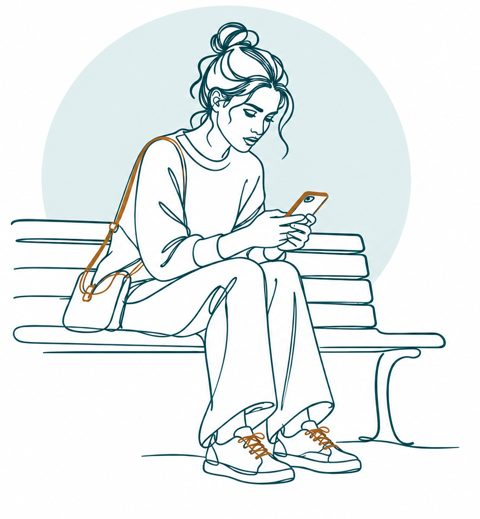

Práctica en aula · Terapia dialéctico-conductual
Caso Valeria — Análisis en cadena
Cada grupo recibe un episodio distinto de Valeria, un caso ficticio. Reconstruyan la cadena eslabón por eslabón, desde lo que la hacía vulnerable hasta las consecuencias, y decidan dónde cortarla. Lo que escriban sobre pensamientos, emociones e impulsos son hipótesis que se desprenden del relato.
Escriban sus respuestas manualmente: copiar, pegar y cortar están deshabilitados en este formulario. Al presionar "Guardar actividad" se genera un PDF rellenable con sus respuestas: en el celular se abre el menú para compartirlo y en el computador se descarga. Al terminar, presionen además "Enviar al docente": se abrirá una pestaña confirmando que las respuestas llegaron.
Datos del grupo
Grupo del curso *
Seleccionen el grupo de la asignatura al que pertenecen.
Grupo de trabajo *
Cada grupo trabaja un episodio distinto.
El episodio
Elijan el curso y el grupo para ver su episodio.

La cadena
Un eslabón por casilla, en el orden en que ocurrió.
1/8Vulnerabilidad *
Lo que la hacía más vulnerable antes del evento.
2/8Evento desencadenante *
El hecho concreto con el que empieza la cadena.
3/8Pensamientos *
4/8Emociones y sensaciones *
5/8Impulso *
6/8Conducta problema *
7/8Consecuencias a corto plazo *
8/8Consecuencias a largo plazo *
Análisis de soluciones
Nivel de la jerarquía de metas *
Eslabón donde intervenir *
Habilidad *
Cómo la usaría Valeria en ese momento *